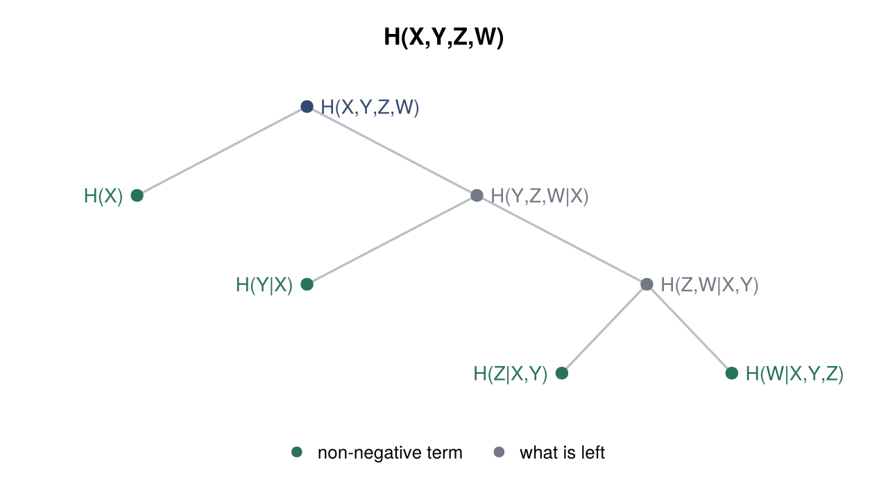
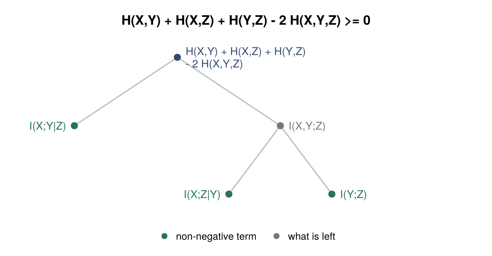
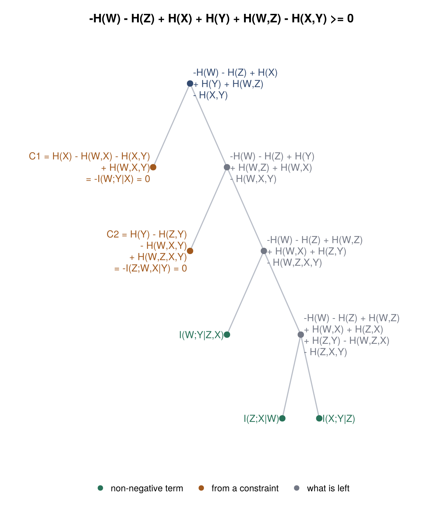
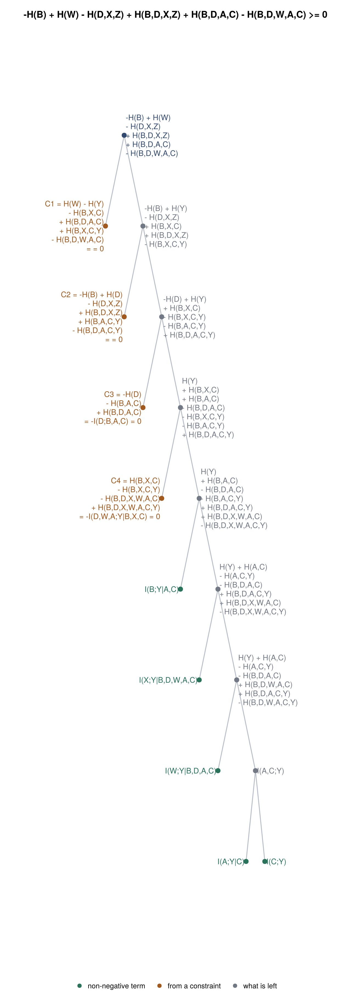

Examples
Every output on this page is produced when the documentation is built, so it is what the current version actually prints. The figures come from the plotting utilities described on the Illustrations page:
using Xitip
using CairoMakie, GraphMakie, Graphs, NetworkLayoutBasic Shannon inequalities
[prove("H(X) >= 0"),
prove("I(X;Y) >= 0"),
prove("H(X|Y) <= H(X)"),
prove("H(X,Y) <= H(X) + H(Y)"), # subadditivity
prove("H(X,Y) = H(X) + H(Y|X)"), # chain rule
prove("I(X;Y,Z) = I(X;Y) + I(X;Z|Y)"), # chain rule for mutual information
prove("2 H(X,Y,Z) <= H(X,Y) + H(Y,Z) + H(X,Z)")] # Han's inequality7-element Vector{Bool}:
1
1
1
1
1
1
1Statements that do not follow from the basic inequalities:
[prove("H(X) >= 1"),
prove("H(X) <= H(Y)"),
prove("I(X;Y|Z) <= I(X;Y)"),
prove("I(X;Y;Z) >= 0"), # multivariate mutual information can be negative
prove("H(X,Y) = H(X) + H(Y)")]5-element Vector{Bool}:
0
0
0
0
0Constraints
[prove("I(X;Y|Z) <= I(X;Y)", "H(Z) = 0"),
prove("I(X;Z) <= I(X;Y)", "X/Y/Z"), # data processing
prove("I(A;D) <= I(B;C)", "A/B/C/D"),
prove("I(X;Y) = 0", "X.Y"), # mutual independence
prove("H(X,Y) = H(Y)", "X:Y"), # X is a function of Y
prove("X:Y,Z", "H(X|Y,Z) = 0")] # ... and the other way round6-element Vector{Bool}:
1
1
1
1
1
1Constraints that contradict each other are an error, since anything at all would follow from them:
julia> prove("H(X) >= 0", "H(X) = 1", "H(X) = 2")ERROR: the constraints are contradictory
Exact arithmetic
Coefficients are exact rationals, so decimals behave:
[prove("0.1 H(X) + 0.2 H(X) >= 0.3 H(X)"), # 0.1 + 0.2 == 0.3 exactly here
prove("0.1 H(X) + 0.2 H(X) = 0.3 H(X)"),
prove("H(X) >= 1.00000001", "H(X) = 1.00000001"),
prove("H(X) >= 1.00000001", "H(X) = 1")]4-element Vector{Bool}:
1
1
1
0Counting variables
count_variables counts the distinct random variables in all statements, which is what oXitipLen did:
count_variables("I(X;Y|Z) <= I(X;Y)", "H(W) = 0")4The chain rule as a tree
plot_chain_rule(["X", "Y", "Z", "W"])
A step-by-step proof
print_proof(explain("2 H(X,Y,Z) <= H(X,Y) + H(Y,Z) + H(X,Z)"))Proof of E >= 0 where E = H(X,Y) + H(X,Z) + H(Y,Z) - 2 H(X,Y,Z)
E = H(X,Y) + H(X,Z) + H(Y,Z) - 2 H(X,Y,Z)
= I(X;Y|Z) + [ H(Z) + H(X,Y) - H(X,Y,Z) ]
= I(X;Y|Z) + I(X;Z|Y) + [ H(Y) + H(Z) - H(Y,Z) ]
= I(X;Y|Z) + I(X;Z|Y) + I(Y;Z)
where every term is non-negative:
I(X;Y|Z) = -H(Z) + H(X,Z) + H(Y,Z) - H(X,Y,Z) >= 0
I(X;Z|Y) = -H(Y) + H(X,Y) + H(Y,Z) - H(X,Y,Z) >= 0
I(Y;Z) = H(Y) + H(Z) - H(Y,Z) >= 0
so E is a sum of non-negative terms, hence E >= 0.The same derivation as a tree: each branch to the left is a non-negative term, and the line down the right is what is still to account for.
plot_proof_tree(explain("2 H(X,Y,Z) <= H(X,Y) + H(Y,Z) + H(X,Z)"))
Data processing over a four-variable Markov chain
I(W;Z) <= I(X;Y) given W/X/Y/Z. The chain implies one relation per link, so two of them appear, as C1 and C2:
print_proof(explain("I(W;Z) <= I(X;Y)", "W/X/Y/Z"))Proof of E >= 0 where E = -H(W) - H(Z) + H(X) + H(Y) + H(W,Z) - H(X,Y)
E = -H(W) - H(Z) + H(X) + H(Y) + H(W,Z) - H(X,Y)
= C1 + [ -H(W) - H(Z) + H(Y) + H(W,Z) + H(W,X) - H(W,X,Y) ]
= C1 + C2 + [ -H(W) - H(Z) + H(W,Z) + H(W,X) + H(Z,Y) - H(W,Z,X,Y) ]
= C1 + C2 + I(W;Y|Z,X) + [ -H(W) - H(Z) + H(W,Z) + H(W,X) + H(Z,X) + H(Z,Y) - H(W,Z,X) - H(Z,X,Y) ]
= C1 + C2 + I(W;Y|Z,X) + I(Z;X|W) + [ -H(Z) + H(Z,X) + H(Z,Y) - H(Z,X,Y) ]
= C1 + C2 + I(W;Y|Z,X) + I(Z;X|W) + I(X;Y|Z)
where every term is non-negative:
C1 = H(X) - H(W,X) - H(X,Y) + H(W,X,Y) = -I(W;Y|X) = 0 (from constraint 1, reversed: W/X/Y/Z)
C2 = H(Y) - H(Z,Y) - H(W,X,Y) + H(W,Z,X,Y) = -I(Z;W,X|Y) = 0 (from constraint 1, reversed: W/X/Y/Z)
I(W;Y|Z,X) = -H(Z,X) + H(W,Z,X) + H(Z,X,Y) - H(W,Z,X,Y) >= 0
I(Z;X|W) = -H(W) + H(W,Z) + H(W,X) - H(W,Z,X) >= 0
I(X;Y|Z) = -H(Z) + H(Z,X) + H(Z,Y) - H(Z,X,Y) >= 0
so E is a sum of non-negative terms, hence E >= 0.The constraint itself, drawn over the variables:
plot_constraints("I(W;Z) <= I(X;Y)", "W/X/Y/Z")
and the proof as a tree, with the two relations the chain implies in their own colour:
plot_proof_tree(explain("I(W;Z) <= I(X;Y)", "W/X/Y/Z"))
The same proof as LaTeX:
latex(explain("I(W;Z) <= I(X;Y)", "W/X/Y/Z"))\begin{align*}
E &= - H(W) - H(Z) + H(X) + H(Y) + H(W,Z) - H(X,Y) \\
&= C_{1} + C_{2} + I(W ; Y \mid Z,X) + I(Z ; X \mid W) \\
&\quad + I(X ; Y \mid Z) \;\ge\; 0
\end{align*}
where
\begin{align*}
C_{1} &= H(X) - H(W,X) - H(X,Y) + H(W,X,Y) \\
&\quad = -I(W ; Y \mid X) \;=\; 0 \\
&\quad \text{(from constraint 1, reversed)} \\
C_{2} &= H(Y) - H(Z,Y) - H(W,X,Y) + H(W,Z,X,Y) \\
&\quad = -I(Z ; W,X \mid Y) \;=\; 0 \\
&\quad \text{(from constraint 1, reversed)}
\end{align*}Eight variables with fourteen constraints
A statement over A, B, C, D, W, X, Y, Z:
\[I(B; D, X, Z) \le I(W; A, B, C, D)\]
under constraints tying the four "inner" variables to the four "outer" ones. This is the largest kind of problem the package is comfortable with: 8 variables means 255 dimensions and 1800 basic inequalities.
statement = "I(B;D,X,Z) <= I(W;A,B,C,D)"
constraints = [
"I(W;A,B,C,D) = I(X;A,B,W)",
"I(W;A,B,C,D) = I(Y;B,C,X)",
"I(W;A,B,C,D) = I(Z;C,D,Y)",
"I(A;B,C,D,Z) = I(B;D,X,Z)",
"I(B;A,D,W,Z) = I(B;D,X,Z)",
"I(C;A,D,W,Z) = I(B;D,X,Z)",
"I(D;A,B,C,Y) = I(B;D,X,Z)",
"I(C;A,W,Y) = I(B;D,X,Z)",
"I(B;A) = 0",
"I(C;A,B) = 0",
"I(D;A,B,C) = 0",
"I(X;C,D|A,B,W) = 0",
"I(Y;A,D,W|B,C,X) = 0",
"I(Z;A,B,W,X|C,D,Y) = 0",
]
prove([statement; constraints])trueThe proof uses nine terms, every multiplier equal to one:
print_proof(explain([statement; constraints]))Proof of E >= 0 where E = -H(B) + H(W) - H(D,X,Z) + H(B,D,X,Z) + H(B,D,A,C) - H(B,D,W,A,C)
E = -H(B) + H(W) - H(D,X,Z) + H(B,D,X,Z) + H(B,D,A,C) - H(B,D,W,A,C)
= C1 + [ -H(B) + H(Y) - H(D,X,Z) + H(B,X,C) + H(B,D,X,Z) - H(B,X,C,Y) ]
= C1 + C2 + [ -H(D) + H(Y) + H(B,X,C) - H(B,X,C,Y) - H(B,A,C,Y) + H(B,D,A,C,Y) ]
= C1 + C2 + C3 + [ H(Y) + H(B,X,C) + H(B,A,C) - H(B,D,A,C) - H(B,X,C,Y) - H(B,A,C,Y) + H(B,D,A,C,Y) ]
= C1 + C2 + C3 + C4 + [ H(Y) + H(B,A,C) - H(B,D,A,C) - H(B,A,C,Y) + H(B,D,A,C,Y) + H(B,D,X,W,A,C) - H(B,D,X,W,A,C,Y) ]
= C1 + C2 + C3 + C4 + I(B;Y|A,C) + [ H(Y) + H(A,C) - H(A,C,Y) - H(B,D,A,C) + H(B,D,A,C,Y) + H(B,D,X,W,A,C) - H(B,D,X,W,A,C,Y) ]
= C1 + C2 + C3 + C4 + I(B;Y|A,C) + I(X;Y|B,D,W,A,C) + [ H(Y) + H(A,C) - H(A,C,Y) - H(B,D,A,C) + H(B,D,W,A,C) + H(B,D,A,C,Y) - H(B,D,W,A,C,Y) ]
= C1 + C2 + C3 + C4 + I(B;Y|A,C) + I(X;Y|B,D,W,A,C) + I(W;Y|B,D,A,C) + [ H(Y) + H(A,C) - H(A,C,Y) ]
= C1 + C2 + C3 + C4 + I(B;Y|A,C) + I(X;Y|B,D,W,A,C) + I(W;Y|B,D,A,C) + I(A;Y|C) + [ H(C) + H(Y) - H(C,Y) ]
= C1 + C2 + C3 + C4 + I(B;Y|A,C) + I(X;Y|B,D,W,A,C) + I(W;Y|B,D,A,C) + I(A;Y|C) + I(C;Y)
where every term is non-negative:
C1 = H(W) - H(Y) - H(B,X,C) + H(B,D,A,C) + H(B,X,C,Y) - H(B,D,W,A,C) = 0 (from constraint 2: I(W;A,B,C,D) = I(Y;B,C,X))
C2 = -H(B) + H(D) - H(D,X,Z) + H(B,D,X,Z) + H(B,A,C,Y) - H(B,D,A,C,Y) = 0 (from constraint 7: I(D;A,B,C,Y) = I(B;D,X,Z))
C3 = -H(D) - H(B,A,C) + H(B,D,A,C) = -I(D;B,A,C) = 0 (from constraint 11, reversed: I(D;A,B,C) = 0)
C4 = H(B,X,C) - H(B,X,C,Y) - H(B,D,X,W,A,C) + H(B,D,X,W,A,C,Y) = -I(D,W,A;Y|B,X,C) = 0 (from constraint 13, reversed: I(Y;A,D,W|B,C,X) = 0)
I(B;Y|A,C) = -H(A,C) + H(B,A,C) + H(A,C,Y) - H(B,A,C,Y) >= 0
I(X;Y|B,D,W,A,C) = -H(B,D,W,A,C) + H(B,D,X,W,A,C) + H(B,D,W,A,C,Y) - H(B,D,X,W,A,C,Y) >= 0
I(W;Y|B,D,A,C) = -H(B,D,A,C) + H(B,D,W,A,C) + H(B,D,A,C,Y) - H(B,D,W,A,C,Y) >= 0
I(A;Y|C) = -H(C) + H(A,C) + H(C,Y) - H(A,C,Y) >= 0
I(C;Y) = H(C) + H(Y) - H(C,Y) >= 0
so E is a sum of non-negative terms, hence E >= 0.Only four of the fourteen constraints are needed — numbers 2, 7, 11 and 13, the ones appearing as C1 to C4 above:
needed = [constraints[2], constraints[7], constraints[11], constraints[13]]
prove([statement; needed])trueNone of those four is redundant: dropping any one of them leaves a statement that no longer follows from the basic inequalities. (Each of those queries takes about 12 seconds, so they are not run while this page is built.)
julia> [prove([statement; needed[setdiff(1:4, i)]]) for i in 1:4]
4-element Vector{Bool}:
0
0
0
0The whole derivation as a tree. C1 to C4 are the four constraints it needs, spelled out where they are used; the green leaves are elemental inequalities, and the line down the middle is the remainder shrinking step by step:
plot_proof_tree(explain([statement; constraints]))
and as LaTeX:
latex(explain([statement; constraints]))\begin{align*}
E &= - H(B) + H(W) - H(D,X,Z) + H(B,D,X,Z) + H(B,D,A,C) \\
&\quad - H(B,D,W,A,C) \\
&= C_{1} + C_{2} + C_{3} + C_{4} + I(B ; Y \mid A,C) \\
&\quad + I(X ; Y \mid B,D,W,A,C) + I(W ; Y \mid B,D,A,C) \\
&\quad + I(A ; Y \mid C) + I(C ; Y) \;\ge\; 0
\end{align*}
where
\begin{align*}
C_{1} &= H(W) - H(Y) - H(B,X,C) + H(B,D,A,C) + H(B,X,C,Y) \\
&\quad - H(B,D,W,A,C) \;=\; 0 \quad \text{(from constraint 2)} \\
C_{2} &= - H(B) + H(D) - H(D,X,Z) + H(B,D,X,Z) + H(B,A,C,Y) \\
&\quad - H(B,D,A,C,Y) \;=\; 0 \quad \text{(from constraint 7)} \\
C_{3} &= - H(D) - H(B,A,C) + H(B,D,A,C) \\
&\quad = -I(D ; B,A,C) \;=\; 0 \\
&\quad \text{(from constraint 11, reversed)} \\
C_{4} &= H(B,X,C) - H(B,X,C,Y) - H(B,D,X,W,A,C) \\
&\quad + H(B,D,X,W,A,C,Y) \\
&\quad = -I(D,W,A ; Y \mid B,X,C) \;=\; 0 \\
&\quad \text{(from constraint 13, reversed)}
\end{align*}Non-Shannon-type inequalities
Two famous statements that the basic inequalities cannot settle. The Ingleton expression is not always non-negative for entropies, while the Zhang–Yeung inequality is true but needs more than Shannon-type reasoning, so both come back as "not provable":
[prove("I(A;B) <= I(A;B|C) + I(A;B|D) + I(C;D)"), # Ingleton
prove("2I(C;D) <= I(A;B) + I(A;C,D) + 3I(C;D|A) + I(C;D|B)")] # Zhang-Yeung2-element Vector{Bool}:
0
0The counterexample for Ingleton is the familiar Vámos-like polymatroid:
explain("I(A;B) <= I(A;B|C) + I(A;B|D) + I(C;D)")NOT PROVABLE (false or non-Shannon-type)
No proof of -H(A) - H(B) + H(A,B) + H(A,C) + H(B,C) + H(A,D) + H(B,D) - H(C,D) - H(A,B,C) - H(A,B,D) >= 0; it fails for the direction:
H(A) = 13
H(B) = 13
H(A,B) = 21
H(C) = 13
H(A,C) = 21
H(B,C) = 21
H(A,B,C) = 28
H(D) = 13
H(A,D) = 21
H(B,D) = 21
H(A,B,D) = 28
H(C,D) = 24
H(A,C,D) = 28
H(B,C,D) = 28
H(A,B,C,D) = 30
which satisfy every elemental inequality and constraint, but give -1 < 0.
There the statement reads
left side I(A;B) = 5
right side I(A;B|C) + I(A;B|D) + I(C;D) = 1 + 1 + 2 = 4
so it asks for 5 <= 4, which is false.
where
I(A;B) = H(A) + H(B) - H(A,B) = 13 + 13 - 21 = 5
I(A;B|C) = -H(C) + H(A,C) + H(B,C) - H(A,B,C) = -13 + 21 + 21 - 28 = 1
I(A;B|D) = -H(D) + H(A,D) + H(B,D) - H(A,B,D) = -13 + 21 + 21 - 28 = 1
I(C;D) = H(C) + H(D) - H(C,D) = 13 + 13 - 24 = 2
Any positive multiple of these values fails in the same way.
Degenerate statements
[prove("1 >= 0"),
prove("0 >= 1"),
prove("H(X) - H(X) = 0"),
prove("H(X|X) = 0"),
prove("I(X;X) = H(X)")]5-element Vector{Bool}:
1
0
1
1
1From the command line
The same problems through bin/xitip (see Command line):
$ bin/xitip 'I(X;Y|Z) <= I(X;Y)' 'H(Z) = 0'
The information expression is TRUE.
$ bin/xitip --steps 'H(X,Y,Z) <= H(X,Y) + H(Z)'
Proof of E >= 0 where E = H(Z) + H(X,Y) - H(X,Y,Z) = I(X,Y;Z)
E = H(Z) + H(X,Y) - H(X,Y,Z)
= I(X;Z|Y) + [ H(Y) + H(Z) - H(Y,Z) ]
= I(X;Z|Y) + I(Y;Z)
where every term is non-negative:
I(X;Z|Y) = -H(Y) + H(X,Y) + H(Y,Z) - H(X,Y,Z) >= 0
I(Y;Z) = H(Y) + H(Z) - H(Y,Z) >= 0
so E is a sum of non-negative terms, hence E >= 0.
$ bin/xitip --latex 'H(X,Y,Z) <= H(X,Y) + H(Z)'
\begin{align*}
E &= H(Z) + H(X,Y) - H(X,Y,Z) \\
&= I(X ; Z \mid Y) + I(Y ; Z) \;\ge\; 0
\end{align*}
$ bin/xitip --count 'I(X;Y|Z) <= I(X;Y)'
3
$ echo 'I(X;Y|Z) <= I(X;Y)' | bin/xitip -
The information expression is either:
1. FALSE, or
2. a non-Shannon type inequality